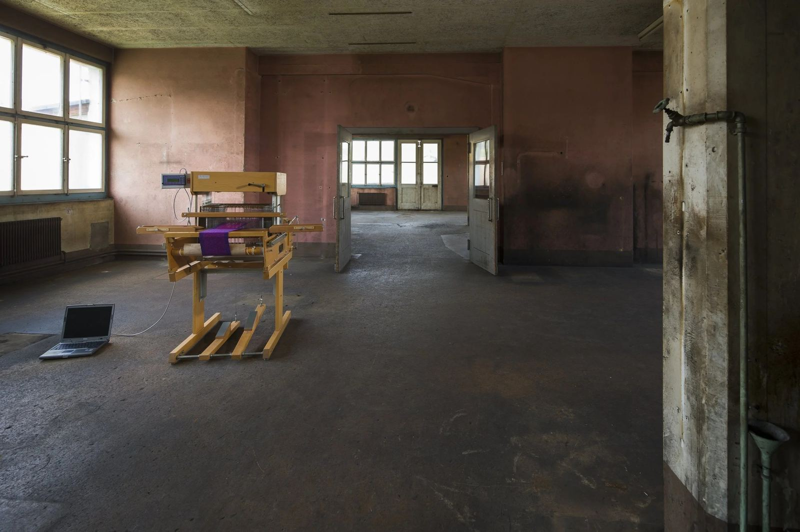
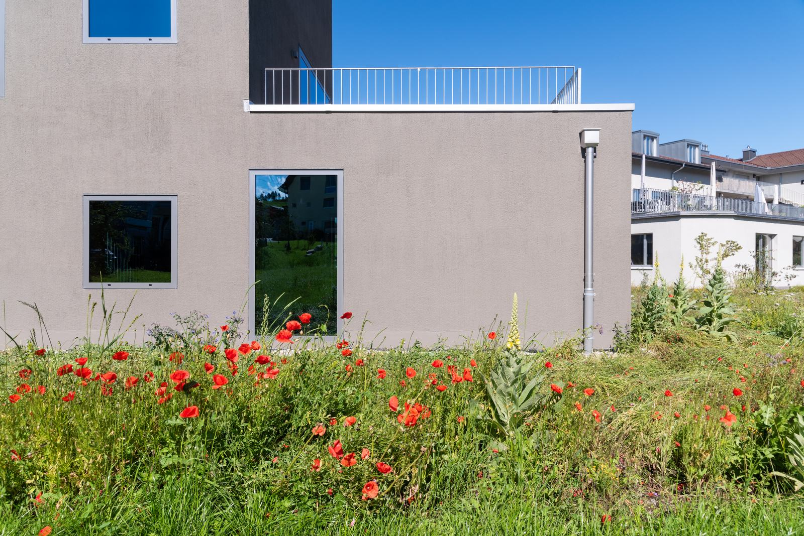

2015–2020
Fabrikareal Biglen
Umnutzung der früheren Webstuhlfabrik: 3'000 m³ zu Atelierwohnungen, Volumen CHF 8 Mio. Als Eigentümer war ich verantwortlich für Business- und Finanzplan, Architekturkonzept, Kosten, Termine und Qualität. Mit der Zeitschrift Hochparterre haben wir den Umbau mit Anlässen vor Ort begleitet. Die Liegenschaft ist verkauft.